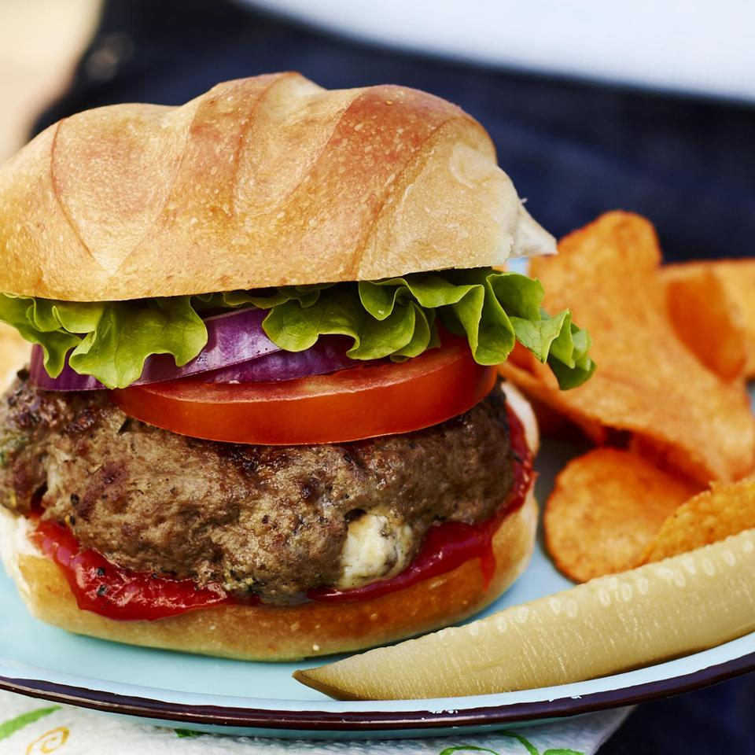

Herb Roasted Pork Loin and Potatoes

Description
Hamburgers? Yes. But basic fare? Definitely not! What a treat they are, and the wise cook will make up a dozen or so for the freezer. If you like blue cheese, you'll never forget these burgers.
Ingredients
- 3 pounds lean ground beef
- 4 ounces blue cheese, crumbled
- ½ cup minced fresh chives
- ¼ teaspoon hot pepper sauce
- 1 teaspoon Worcestershire sauce
- 1 teaspoon coarsely ground black pepper
- 1½ teaspoons salt
- 1 teaspoon dry mustard
- 12 French rolls or hamburger buns
Steps
- In a large bowl, mix the ground beef, blue cheese, chives, hot pepper sauce, Worcestershire sauce, black pepper, salt, and mustard. Cover, and refrigerate for 2 hours.
- Preheat grill for high heat. Gently form the burger mixture into about 12 patties.
- Oil the grill grate. Grill patties 5 minutes per side, or until well done. Serve on rolls.
Return to main page